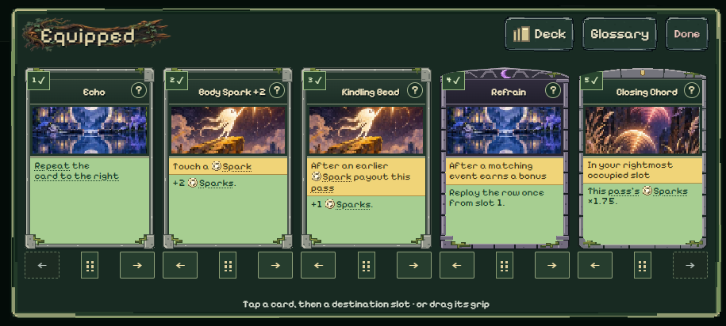
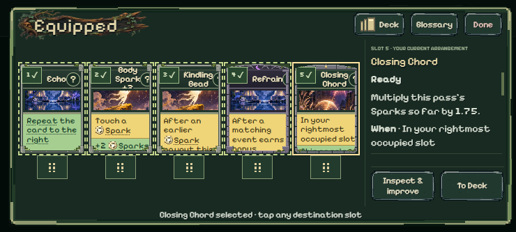
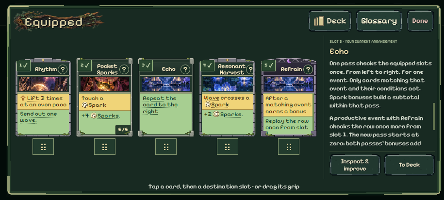
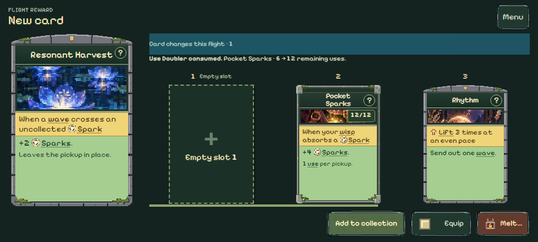
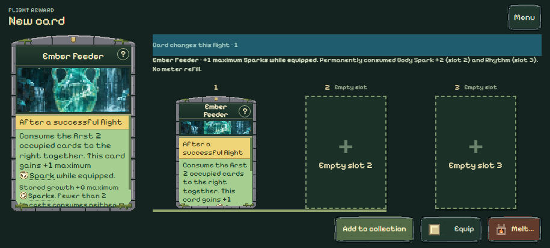
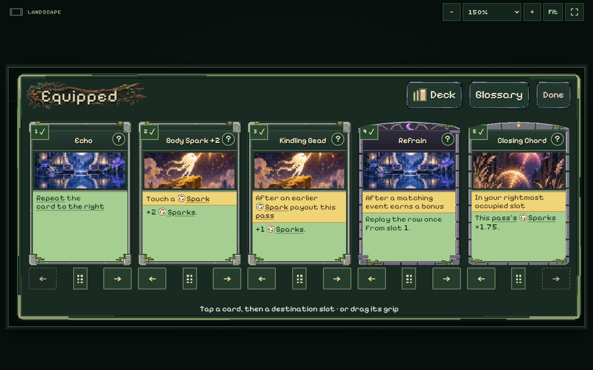

Try a mounted row with Echo, Body Spark +2, Kindling Bead, Refrain and Closing Chord. Select a card to see its trigger and pass examples, then tap a destination or drag its grip. The sample preserves your saved journeys.






Chrome touch emulation at 915×412 and 740×333; physical Pixel 10 testing has not been performed. Full-suite comparison: 656/716 pass, same 60 known failures, zero new failures.